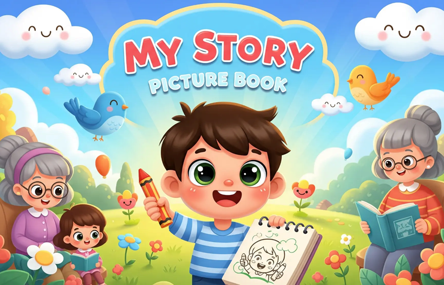
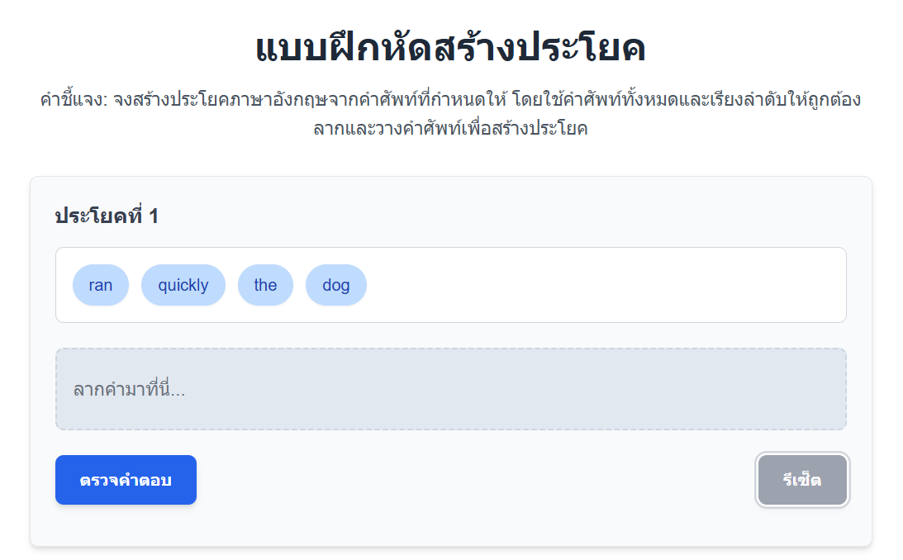
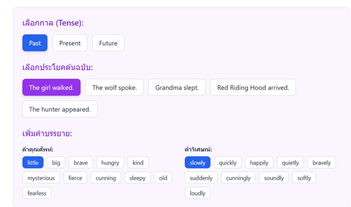
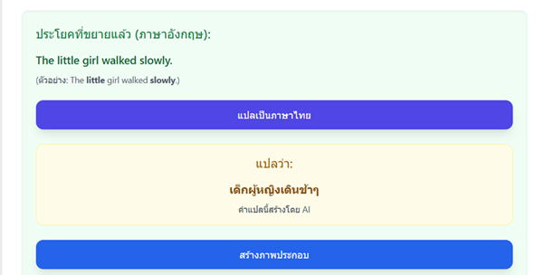
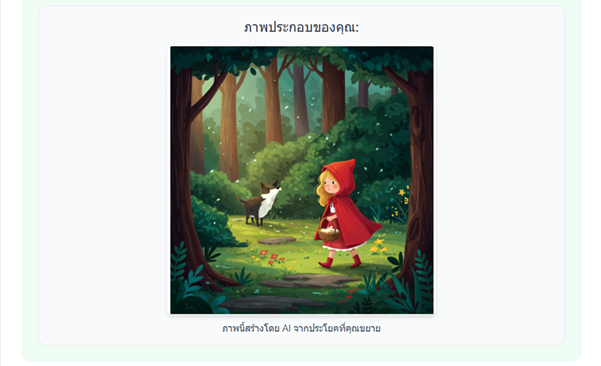

การใช้นิทานภาษาอังกฤษเพื่อพัฒนาทักษะการสร้างประโยคสร้างสรรค์สำหรับนักเรียนชั้นมัธยมศึกษาปีที่ 2
👇 แบบฝึกหัดการเรียงคำศัพท์ เพื่อแต่งประโยค <<< กดตรงนี้เพื่อไปทำแบบฝึกหัด
กรุณาใช้ คอมพิวเตอร์ ไม่แนะนำให้ใช้มือถือทำแบบฝึกหัดเพราะจอมันเล็กนะครับ
👇 การขยายประโยคจากนิทานเรื่องหนูน้อยหมวกแดง <<< กดตรงนี้เพื่อไปทำแบบฝึกหัด
กรุณาใช้ คอมพิวเตอร์ ไม่แนะนำให้ใช้มือถือทำแบบฝึกหัดเพราะจอมันเล็กนะครับ
  การใช้นิทานภาษาอังกฤษช่วยให้นักเรียนมีทักษะการสร้างประโยคที่ดีขึ้นอย่างมีนัยสำคัญ โดยมีความสามารถในการใช้คำศัพท์และไวยากรณ์เพิ่มขึ้น รวมถึงมีความคิดสร้างสรรค์ในการสร้างเรื่องราวมากขึ้น นักเรียนมีความพึงพอใจต่อการเรียนรู้ในระดับมากและมีความกระตือรือร้นในการร่วมกิจกรรม อย่างไรก็ตาม ครูควรให้ความสนใจกับนักเรียนบางคนที่ยังมีส่วนร่วมน้อย
ผลวิจัยสอดคล้องกับทฤษฎีการเรียนรู้ภาษาที่สองที่เน้นการเรียนรู้ในบริบทที่มีความหมาย และยังสอดคล้องกับแนวคิดการสอนภาษาเพื่อการสื่อสาร (Communicative Language Teaching) การใช้นิทานช่วยสร้างแรงจูงใจและบรรยากาศการเรียนรู้ที่สนุกสนาน และกิจกรรมกลุ่มยังส่งเสริมการเรียนรู้แบบร่วมมืออีกด้วย
สำหรับการนำผลไปใช้: ครูควรนำนิทานมาใช้เป็นสื่อการสอนอย่างสม่ำเสมอ จัดกิจกรรมที่หลากหลาย และให้กำลังใจนักเรียนอย่างต่อเนื่อง รวมถึงควรมีการพัฒนาสื่อการสอนที่เหมาะสมและการฝึกอบรมครูผู้สอน สำหรับการวิจัยครั้งต่อไป: ควรศึกษาผลในระยะยาว, ศึกษาในกลุ่มตัวอย่างที่หลากหลาย, เปรียบเทียบกับวิธีการสอนอื่น ๆ และศึกษาปัจจัยที่ส่งผลต่อความพึงพอใจของนักเรียน